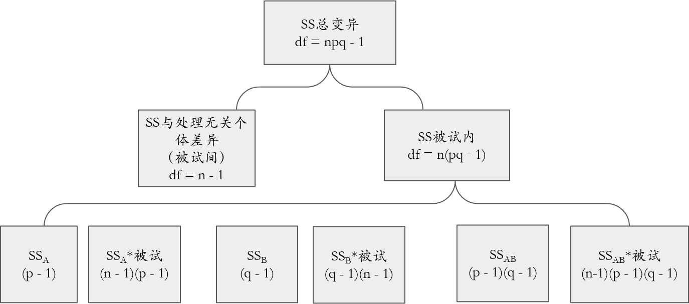
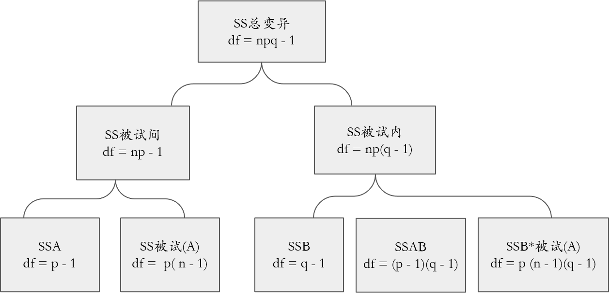
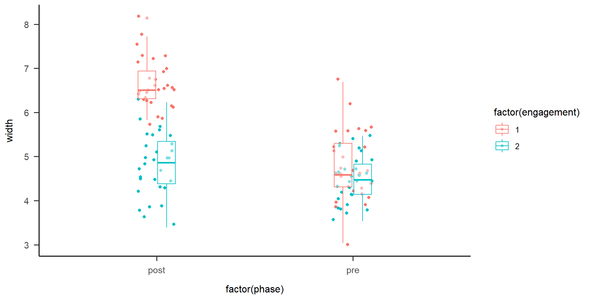

4 Multi-Factor ANOVA
Hu Chuan-Peng
2023-09-26
本次课内容
两因素重复测量实验设计
混合设计
工作流程(workflow)
复习
单因素随机区组设计的数据模式
| a1 | a2 | a3 | a4 | |
|---|---|---|---|---|
| 区组1 | S11 | S12 | S13 | S14 |
| 区组2 | S21 | S22 | S23 | S24 |
| 区组3 | S31 | S32 | S33 | S34 |
| 区组4 | S41 | S42 | S43 | S44 |
单因素随机区组设计的变异示意图

单因素随机区组设计的平方和与自由度分解

单因素随机区组设计的平方和的计算
总平方和：\(SS_{T} = \sum \sum x^2 - \frac{(\sum \sum x)^2}{nk}\)
组间平方和：\(SS_{B} = \sum \frac{(\sum x)^2}{n} - \frac{(\sum \sum x)^2}{nk}\)
区组平方和：\(SS_{R} = \sum \frac{\sum x}{k} - \frac{(\sum \sum x)^2}{nk}\)
单因素随机区组设计的方差分析表
| 变异来源 | 平方和 | 自由度 | 均方 | F |
| 组间变异 | SS组间 | p-1 | MS组间=SS组间/(p - 1) | MS组间/MS残差 |
| 组内变异 | SS组内 | p(n-1) | MS组内 = SS组内/p(n - 1) | |
| 区组变异 | SS区组 | n-1 | MS区组 = SS区组/ (n - 1) | MS区组/MS残差 |
| 残差 | SS残差 | (p-1)(n-1) | MS残差 = SS残差/(p -1)( n - 1) | |
| 总和 | SS总变异 | np-1 |
单因素随机区组设计适用情境
- 研究中有一个自变量，自变量有两个或多个水平(P>=2),
- 研究中还有一个无关变量也有两个或多个水平(n>=2),
- 自变量的水平与无关变量的水平之间没有交互作用。
单因素重复测量设计的数据模式
| a1 | a2 | a3 | a4 | |
|---|---|---|---|---|
| 被试1 | S1 | S1 | S1 | S1 |
| 被试2 | S2 | S2 | S2 | S2 |
| 被试3 | S3 | S3 | S3 | S3 |
| 被试4 | S4 | S4 | S4 | S4 |
\[参考来源：舒华《心理与教育研究中的多因素实验设计》\]
单因素重复测量设计的平方和与自由度分解

单因素重复测量设计平方和计算
总平方和：\(SS_{T} = \sum \sum x^2 - \frac{(\sum \sum x)^2}{nk}\)
实验处理平方和：\(SS = \sum \frac{(\sum x)^2}{n} - \frac{(\sum \sum x)^2}{nk}\)
被试间平方和：\(SS_{B} = \sum \frac{\sum x}{k} - \frac{(\sum \sum x)^2}{nk}\)
单因素重复测量设计的方差分析表
| 变异来源 | 平方和 | 自由度 | 均方 | F |
| 被试间变异 | SS被试间 | n-1 | ||
| 被试内变异 | SS被试内 | n(p-1) | ||
| 实验处理 | SS实验处理 | p-1 | MS实验处理 = SS实验处理/ (p - 1) | MS实验处理/MS残差 |
| 残差 | SS残差 | (n-1)(p-1) | MS残差 = SS残差/(n -1)(p - 1) | |
| 总和 | SS总变异 | np-1 |
单因素重复测量设计基本预设
1.每个样本内的观测量之间必须独立
2.样本源自的总体必须是正态的
3.样本源自的总体方差必须相等(方差齐性)
4.协方差齐性：每位受试者在每个处理条件中的测量值保持独立
协方差齐性检验
1.Mauchly球形检验 (Mauchly’s sphericity test）
2.如果重复测量ANOVA所得p<0.05(存在显著效应)时，必须考虑此检验
3.Mauchly球形检验对p值进行调整，以适应数据不符合协方差齐性假定的情况
随机区组设计与重复测量设计的联系和区别


两因素重复测量实验设计
两因素重复测量实验设计
- 在一个两因素实验设计中，当两个因素都是重复测量时，即每个被试都接受所有实验处理的结合,叫做两因素重复测量实验设计/被试内设计。
- 两因素重复测量实验设计适用条件：
- 研究中有两个自变量,每个自变量有两个或多个水平,如果一个自变量有p个水平，另一个自变量有q个水平,实验中含 p*q个处理的结合。
- 研究中的两个自变量都是被试内变量
假设检验
（1）A因素的处理效应为0
\[ H_0: \mu_1 = \mu_2 = \mu_3 = ... = \mu_p\]或\[H_0: α_j=0，α_j表示A因素的水平j的处理效应\]
（2）B因素的处理效应为0
\[ H_0: \mu_1 = \mu_2 = \mu_3 = ... = \mu_q\]或\[H_0: β_k=0，β_k表示B因素的水平k的处理效应\]
（3）AB因素的处理效应为0
\[H_0: \mu_{jk} - \mu_{j'k} - \mu_{jk'}+ \mu_{j'k'}= 0\]或\[(αβ)_{jk}=0，(αβ)_{jk}表示水平α_j和β_k的交互作用\]
数据模式
| a1 | a1 | a1 | a2 | a2 | a2 |
| b1 | b2 | b3 | b1 | b2 | b3 |
| S1 | S1 | S1 | S1 | S1 | S1 |
| S2 | S2 | S2 | S2 | S2 | S2 |
| S3 | S3 | S3 | S3 | S3 | S3 |
| S4 | S4 | S4 | S4 | S4 | S4 |
平方和与自由度分解
平方和计算
- 各种基本量的计算 \[Y=\frac{(\sum_{i=1}^{n}\sum_{j=1}^{p}\sum_{k=1}^{q}Y_{ijk} )^2}{npq}\] \[ABS=\sum_{i=1}^{n}\sum_{j=1}^{p}\sum_{k=1}^{q}Y_{ijk}^2\] \[S=\sum_{i=1}^{n}\frac{(\sum_{j=1}^{p}\sum_{k=1}^{q}Y_{ijk})^2}{pq} \] \[A=\sum_{j=1}^{p}\frac{\sum_{i=1}^{n}(\sum_{k=1}^{q}Y_{ijk})^2}{nq} \] \[B=\sum_{k=1}^{q}\frac{(\sum_{i=1}^{n}\sum_{j=1}^{p}Y_{ijk})^2}{nq} \] \[AS=\sum_{i=1}^{n}\sum_{j=1}^{p}\frac{(\sum_{k=1}^{q}Y_{ijk})^2}{q} \] \[BS=\sum_{i=1}^{n}\sum_{k=1}^{q}\frac{(\sum_{j=1}^{p}Y_{ijk})^2}{p} \] \[AB=\sum_{j=1}^{p}\sum_{k=1}^{q}\frac{(\sum_{i=1}^{n}Y_{ijk})^2}{n} \]
平方和计算
SS总变异=[ABS]-[Y]
SS被试间=[S]-[Y]
SS被试内=SS总变异-SS被试间
SSA=[A]-[Y]
SSA×被试=[AS]-[Y]
SSB=[B]-[Y]
SSB×被试异=[BS]-[Y]
SSAB=[AB]-[Y]
SSA×B×被试=SS被试内-SSA-SSA×被试-SSB-SSB×被试异-SSAB
练习
阅读理解中的影响因素探索（假想实验）
假定被试阅读前一篇文章不会对阅读后一篇文章产生系统的影响。每个被试每次阅读一篇文章，阅读顺序进行平衡。
研究者操纵生字密度和主题熟悉性这两个被试内因素。
主题熟悉性有两个水平：a1，a2；
生字密度有三个水平：b1，b2，b3。
被试 n = 4名。
数据
| a1 | a1 | a1 | a2 | a2 | a2 | |
| b1 | b2 | b3 | b1 | b2 | b3 | |
| S1 | 3 | 4 | 5 | 4 | 8 | 12 |
| S2 | 6 | 6 | 7 | 5 | 9 | 13 |
| S3 | 4 | 4 | 5 | 3 | 8 | 12 |
| S4 | 3 | 2 | 2 | 3 | 7 | 11 |
\[m=6.08\]
计算SS总变异与SS被试间变异
| a1 | a1 | a1 | a2 | a2 | a2 | ||
| b1 | b2 | b3 | b1 | b2 | b3 | S | |
| S1 | 3(n=1) | 4 | 5 | 4 | 8 | 12 | 36(n=6) |
| S2 | 6 | 6 | 7 | 5 | 9 | 13 | 46 |
| S3 | 4 | 4 | 5 | 3 | 8 | 12 | 36 |
| S4 | 3 | 2 | 2 | 3 | 7 | 11 | 28 |
\[SS~总变异~=(3 - m)^2 + (6 - m)^2 + (4 - m)^2 + … + (12 - m)^2 + (11 - m)^2\]
\[SS被试间 = (36 - m)^2 + (46 - m)^2 + (36 - m)^2 + (28 - m)^2\]
计算SSA、SSB、SSAB
| a1 | a2 | \[\sum\] | B | |
| b1 | 16(n=4) | 15 | 31 | 31 |
| b2 | 16 | 32 | 48 | 48 |
| b3 | 19 | 48 | 67 | 67 |
| 51 | 95 |
\[SS_A = (51 - m)^2 + (95 - m)^2\]
\[SS_B = (31 - m)^2 + (48 - m)^2 + (67 - m)^2\]
\[SS_{AB} = (16 - m)^2 + (16 - m)^2 + … + (67 - m)^2 - SSA - SSB\]
计算SSA被试、SSB被试、SSAB被试
| a1 | a2 | |
| S1 | 12(n=3) | 24 |
| S2 | 19 | 27 |
| S3 | 13 | 23 |
| S4 | 7 | 21 |
| b1 | b2 | b3 | |
| S1 | 7(n=2) | 12 | 17 |
| S2 | 11 | 15 | 20 |
| S3 | 7 | 12 | 17 |
| S4 | 6 | 9 | 13 |
\[SSA*被试 = (12 - m)^2 + (19 - m)^2 + … + (21 - m)^2 - SS被试间 - SSA\] \[SSB*被试 = (7 - m)^2 + (11 - m)^2 + … + (17 - m)^2 - SS被试间 - SSB\] \[SSA*B*被试 = SS被试内 - SSA - SSA*被试 - SSB - SSB*被试 -SSAB\]
方差分析表
| 变异来源 | 平方和 | 自由度 | 均方 | F |
| 被试间 | SS被试间 | n-1 | ||
| 被试内 | SS被试内 | n(pq-1) | ||
| A | SSA | p-1 | MSA=SSA/(p-1) | MSA/MSA*被试 |
| A*被试 | SSA*被试 | (p-1)(n-1) | MSA*被试=SSA*被试/(p-1)(n-1) | |
| B | SSB | q-1 | MSB=SSB/(q-1) | MSB/MSB*被试 |
| B*被试 | SSB*被试 | (q-1)(n-1) | MSB*被试=SSB*被试/(q-1)(n-1) | |
| AB | SSAB | (p-1)(q-1) | MSAB=SSAB/(p-1)(q-1) | MSAB/MSA*B*被试 |
| A*B*被试 | SSA*B*被试 | (p-1)(q-1)(n-1) | MSA*B*被试=SSA*B*被试/(p-1)(q-1)(n-1) | |
| 总和 | SS总变异 |
两因素混合设计
两因素混合设计与适用条件
当一个实验设计中既包含非重复测量的因素(被试间因素)，又包含重复测量的因素(被试内因素)时，叫做混合因素设计。
适用条件:
- 研究中有两个自变量，每个自变量有两个或多个水平
- 研究中的一个自变量是被试内的，即每个被试要接受它所有水平的处理。研究中的另一个变量是被试间的，即每个被试只接受它的一个水平的处理，或者它本身是一个被试变量，是每个被试独特具有、而不可能同时兼备的。
- 研究中有两个自变量，每个自变量有两个或多个水平
研究者更感兴趣于研究中的被试内因素的处理效应，以及两个因素的交互作用，希望对它们的估价更加精确。
假设检验
（1）A因素的处理效应为0
\[ H_0: \mu_1 = \mu_2 = \mu_3 = ... = \mu_p\]或\[H_0: α_j=0，α_j表示A因素的水平j的处理效应\]
（2）B因素的处理效应为0
\[ H_0: \mu_1 = \mu_2 = \mu_3 = ... = \mu_q\]或\[H_0: β_k=0，β_k表示B因素的水平k的处理效应\]
（3）AB因素的处理效应为0
\[H_0: \mu_{jk} - \mu_{j'k} - \mu_{jk'}+ \mu_{j'k'}= 0\]或\[(αβ)_{jk}=0，(αβ)_{jk}表示水平α_j和β_k的交互作用\]
数据模式
| b1 | b2 | b3 | |
| a1 | S1 | S1 | S1 |
| a1 | S2 | S2 | S2 |
| a1 | S3 | S3 | S3 |
| a1 | S4 | S4 | S4 |
| a2 | S5 | S5 | S5 |
| a2 | S6 | S6 | S6 |
| a2 | S7 | S7 | S7 |
| a2 | S8 | S8 | S8 |
平方和与自由度分解
平方和基本量计算
\[Y=\frac{(\sum_{i=1}^{n}\sum_{j=1}^{p}\sum_{k=1}^{q}Y_{ijk})^2}{npq}\] \[ABS=\sum_{i=1}^{n}\sum_{j=1}^{p}\sum_{k=1}^{q}Y_{ijk}^2\]
\[AS=\sum_{i=1}^{n} \sum_{j=1}^{p} \frac{(\sum_{k=1}^{q}Y_{ijk})^2}{q}\]
\[A=\sum_{j=1}^{p} \frac{\sum_{i=1}^{n} (\sum_{k=1}^{q}Y_{ijk})^2}{nq}\]
\[B=\sum_{k=1}^{q} \frac{(\sum_{i=1}^{n} \sum_{j=1}^{p}Y_{ijk})^2}{np}\]
\[AB=\sum_{j=1}^{p}\sum_{k=1}^{q}\frac{(\sum_{i=1}^{n}Y_{ijk})^2}{n}\]
平方和计算
SS总变异=[ABS]-[Y]
SS被试间=[AS]-[Y]
SSA=[A]-[Y]
SS被试(A)=SS被试间-SSA
SS被试内=SS总变异-SS被试间
SSB=[B]-[Y]
SSAB=[AB]-[Y]-SSA-SSB
SSB×被试(A)=SS被试内-SSB–SSAB
练习
阅读理解中的影响因素探索（假想实验）
研究者操纵生字密度被试内因素。
生字密度有三个水平：b1，b2，b3。
选用不同年级小学生作为被试间，实验材料对不同年级的熟悉度不同
主题熟悉性有两个水平：a1，a2；
被试：高年级 4名（熟悉度高）；低年级4名（熟悉度低） 。
数据
| b1 | b2 | b3 | ||
| a1 | S1 | 3 | 4 | 5 |
| a1 | S2 | 6 | 6 | 6 |
| a1 | S3 | 4 | 4 | 5 |
| a1 | S4 | 3 | 2 | 2 |
| a2 | S5 | 4 | 8 | 12 |
| a2 | S6 | 5 | 9 | 13 |
| a2 | S7 | 3 | 8 | 12 |
| a2 | S8 | 3 | 7 | 11 |
\[m=6.08\] \[SS总变异 = (3 - m)^2 + (4 - m)^2 + … + (11 - m)^2\]
SS被试间、SSA、SS被试(A)
| A | |||
| a1 | S1 | 12 | |
| a1 | S2 | 19 | |
| a1 | S3 | 3 | A |
| a1 | S4 | 7 | 51 |
| a2 | S5 | 24 | 95 |
| a2 | S6 | 27 | |
| a2 | S7 | 23 | |
| a2 | S8 | 21 |
\[SS~被试间~ = (12 - m)^2 + (19 - m)^2 + … + (21 - m)^2\]
\[SS~A~ = (51 - m)^2 + (95 - m)^2\]
\[SS~被试(A)~ =SS~被试间~ - SS~A~\]
SS被试内、SSB、SSAB、SSB*被试(A)
| b1 | b2 | b3 | A | |
| a1 | 16(n=4) | 16 | 19 | 51 |
| a2 | 15 | 32 | 48 | 95 |
| B | 31 | 48 | 67 |
\[SS_{被试内} =SS_{总变异}~-SS_{被试间}\]
\[SS_B = (31 - m)^2 + (48 - m)^2 + (67 - m)^2\]
\[SS_{AB} = (16 - m)^2 + (415- m)^2+... + (48 - m)^2 -SS_A - SS_B\] \[SS_{B*被试(A)} = SS_{被试内} - SS_B - SS_{AB} \]
方差分析表
| 变异来源 | 平方和 | 自由度 | 均方 | F |
| 被试间 | SS被试间 | np-1 | ||
| A | SSA | p-1 | MSA=SSA/(p-1) | MSA/MS被试（A） |
| 被试（A） | SS被试（A） | p(n-1) | MS被试（A）=SS被试（A）/p(n-1) | |
| 被试内 | SS被试内 | np(q-1) | ||
| B | SSB | q-1 | MSB=SSB/(q-1) | MSB/MSB*被试（A） |
| AB | SSAB | (p-1)(q-1) | MSAB=SSAB/(p-1)(q-1) | MSAB/MSB*被试（A） |
| B*被试（A） | SSB*被试（A） | p(n-1)(q-1) | MSB*被试（A）=SSB*被试（A）/p(n-1)(q-1) | |
| 总和 | SS总变异 | npq-1 |
3 workflow
workflow
某研究者想要考察体感游戏中的认知参与度对儿童执行功能的作用机制。
采用 2(认知参与：高/低)×2(测量时间：前测：第一次训练后测、长期训练后测)混合实验设计，其中, 认知参与度是被试间变量，测量时间为被试内变量，执行功能为因变量。
研究者采用改编的 Best(2012)问卷测量儿童的认知参与度，工作记忆广度测试测量儿童的执行功能。
从某所幼儿园随机选择4~6岁儿童60名，高认知参与度与和低高认知参与度两组各30人，根据分组对儿童进行为期三个月的认知参与度训练。
workflow
- 提出假设。 根据认知刺激假说, 活动中的认知参与激活了与控制高阶认知过程相关的大脑区域(Benzing & Schmidt, 2019)。
根据问题”认知参与度对儿童执行功能的作用机制”，提出相应的研究假设H1和研究假设H2，选择使用单侧检验。
H1：高认知参与度的执行功能与低认知参与度组相似或更弱， μ1 ≤ μ2 。
H2：高认知参与度的执行功能越强， μ2 > μ1 。
Workflow
- 根据研究假设𝐻1，选择相应的统计模型。
描述统计图
Workflow
- 根据研究假设𝐻1，选择相应的统计模型。
- 模型前提预设的检验：正态性检验
Workflow
- 根据研究假设𝐻1，选择相应的统计模型。
- 模型前提条件检验:方差齐性检验
====== ANOVA (Mixed Design) ======
Descriptives:
──────────────────────────────────────
"engagement" "phase" Mean S.D. n
──────────────────────────────────────
engagement1 post 6.647 (0.549) 30
engagement1 pre 4.769 (0.776) 30
engagement2 post 4.806 (0.689) 30
engagement2 pre 4.504 (0.524) 30
──────────────────────────────────────
Total sample size: N = 60
ANOVA Table:
Dependent variable(s): width
Between-subjects factor(s): engagement
Within-subjects factor(s): phase
Covariate(s): –
───────────────────────────────────────────────────────────────────────────────────
MS MSE df1 df2 F p η²p [90% CI of η²p] η²G
───────────────────────────────────────────────────────────────────────────────────
engagement 33.273 0.320 1 58 103.927 <.001 *** .642 [.518, .727] .410
phase 35.654 0.506 1 58 70.429 <.001 *** .548 [.405, .653] .427
engagement * phase 18.641 0.506 1 58 36.823 <.001 *** .388 [.230, .520] .280
───────────────────────────────────────────────────────────────────────────────────
MSE = mean square error (the residual variance of the linear model)
η²p = partial eta-squared = SS / (SS + SSE) = F * df1 / (F * df1 + df2)
ω²p = partial omega-squared = (F - 1) * df1 / (F * df1 + df2 + 1)
η²G = generalized eta-squared (see Olejnik & Algina, 2003)
Cohen’s f² = η²p / (1 - η²p)
Levene’s Test for Homogeneity of Variance:
──────────────────────────────────────
Levene’s F df1 df2 p
──────────────────────────────────────
DV: pre 3.416 1 58 .070 .
DV: post 1.774 1 58 .188
──────────────────────────────────────
Mauchly’s Test of Sphericity:
The repeated measures have only two levels. The assumption of sphericity is always met.workflow
- 确定显著性水平α，α确定后，否定域也随之被确定了。
指定α = 0.05（拒绝零假设犯错的可能性）。
workflow
- 基于𝐻0所设定的统计模型，计算检验统计量的值。
- 两因素混合方差分析
## 两因素混合方差分析
bruceR::MANOVA(df1, subID="ID", dv="width",between = "engagement", within="phase")%>%
EMMEANS("phase", by="engagement")
====== ANOVA (Mixed Design) ======
Descriptives:
──────────────────────────────────────
"engagement" "phase" Mean S.D. n
──────────────────────────────────────
engagement1 post 6.647 (0.549) 30
engagement1 pre 4.769 (0.776) 30
engagement2 post 4.806 (0.689) 30
engagement2 pre 4.504 (0.524) 30
──────────────────────────────────────
Total sample size: N = 60
ANOVA Table:
Dependent variable(s): width
Between-subjects factor(s): engagement
Within-subjects factor(s): phase
Covariate(s): –
───────────────────────────────────────────────────────────────────────────────────
MS MSE df1 df2 F p η²p [90% CI of η²p] η²G
───────────────────────────────────────────────────────────────────────────────────
engagement 33.273 0.320 1 58 103.927 <.001 *** .642 [.518, .727] .410
phase 35.654 0.506 1 58 70.429 <.001 *** .548 [.405, .653] .427
engagement * phase 18.641 0.506 1 58 36.823 <.001 *** .388 [.230, .520] .280
───────────────────────────────────────────────────────────────────────────────────
MSE = mean square error (the residual variance of the linear model)
η²p = partial eta-squared = SS / (SS + SSE) = F * df1 / (F * df1 + df2)
ω²p = partial omega-squared = (F - 1) * df1 / (F * df1 + df2 + 1)
η²G = generalized eta-squared (see Olejnik & Algina, 2003)
Cohen’s f² = η²p / (1 - η²p)
Levene’s Test for Homogeneity of Variance:
──────────────────────────────────────
Levene’s F df1 df2 p
──────────────────────────────────────
DV: pre 3.416 1 58 .070 .
DV: post 1.774 1 58 .188
──────────────────────────────────────
Mauchly’s Test of Sphericity:
The repeated measures have only two levels. The assumption of sphericity is always met.
------ EMMEANS (effect = "phase") ------
Joint Tests of "phase":
──────────────────────────────────────────────────────────────────
Effect "engagement" df1 df2 F p η²p [90% CI of η²p]
──────────────────────────────────────────────────────────────────
phase engagement1 1 58 104.552 <.001 *** .643 [.520, .728]
phase engagement2 1 58 2.701 .106 .044 [.000, .158]
──────────────────────────────────────────────────────────────────
Note. Simple effects of repeated measures with 3 or more levels
are different from the results obtained with SPSS MANOVA syntax.
Estimated Marginal Means of "phase":
───────────────────────────────────────────────────
"phase" "engagement" Mean [95% CI of Mean] S.E.
───────────────────────────────────────────────────
post engagement1 6.647 [6.420, 6.875] (0.114)
pre engagement1 4.769 [4.527, 5.011] (0.121)
post engagement2 4.806 [4.578, 5.034] (0.114)
pre engagement2 4.504 [4.262, 4.746] (0.121)
───────────────────────────────────────────────────
Pairwise Comparisons of "phase":
──────────────────────────────────────────────────────────────────────────────────────
Contrast "engagement" Estimate S.E. df t p Cohen’s d [95% CI of d]
──────────────────────────────────────────────────────────────────────────────────────
pre - post engagement1 -1.878 (0.184) 58 -10.225 <.001 *** -1.883 [-2.251, -1.514]
pre - post engagement2 -0.302 (0.184) 58 -1.643 .106 -0.303 [-0.671, 0.066]
──────────────────────────────────────────────────────────────────────────────────────
Pooled SD for computing Cohen’s d: 0.998
No need to adjust p values.
Disclaimer:
By default, pooled SD is Root Mean Square Error (RMSE).
There is much disagreement on how to compute Cohen’s d.
You are completely responsible for setting `sd.pooled`.
You might also use `effectsize::t_to_d()` to compute d.workflow
- 基于𝐻0所设定的统计模型，计算检验统计量的值。
- 简单效应分析
## 简单效应分析
bruceR::MANOVA(df1, subID="ID", dv="width",between = "engagement", within="phase")%>%
EMMEANS("phase", by="engagement")
====== ANOVA (Mixed Design) ======
Descriptives:
──────────────────────────────────────
"engagement" "phase" Mean S.D. n
──────────────────────────────────────
engagement1 post 6.647 (0.549) 30
engagement1 pre 4.769 (0.776) 30
engagement2 post 4.806 (0.689) 30
engagement2 pre 4.504 (0.524) 30
──────────────────────────────────────
Total sample size: N = 60
ANOVA Table:
Dependent variable(s): width
Between-subjects factor(s): engagement
Within-subjects factor(s): phase
Covariate(s): –
───────────────────────────────────────────────────────────────────────────────────
MS MSE df1 df2 F p η²p [90% CI of η²p] η²G
───────────────────────────────────────────────────────────────────────────────────
engagement 33.273 0.320 1 58 103.927 <.001 *** .642 [.518, .727] .410
phase 35.654 0.506 1 58 70.429 <.001 *** .548 [.405, .653] .427
engagement * phase 18.641 0.506 1 58 36.823 <.001 *** .388 [.230, .520] .280
───────────────────────────────────────────────────────────────────────────────────
MSE = mean square error (the residual variance of the linear model)
η²p = partial eta-squared = SS / (SS + SSE) = F * df1 / (F * df1 + df2)
ω²p = partial omega-squared = (F - 1) * df1 / (F * df1 + df2 + 1)
η²G = generalized eta-squared (see Olejnik & Algina, 2003)
Cohen’s f² = η²p / (1 - η²p)
Levene’s Test for Homogeneity of Variance:
──────────────────────────────────────
Levene’s F df1 df2 p
──────────────────────────────────────
DV: pre 3.416 1 58 .070 .
DV: post 1.774 1 58 .188
──────────────────────────────────────
Mauchly’s Test of Sphericity:
The repeated measures have only two levels. The assumption of sphericity is always met.
------ EMMEANS (effect = "phase") ------
Joint Tests of "phase":
──────────────────────────────────────────────────────────────────
Effect "engagement" df1 df2 F p η²p [90% CI of η²p]
──────────────────────────────────────────────────────────────────
phase engagement1 1 58 104.552 <.001 *** .643 [.520, .728]
phase engagement2 1 58 2.701 .106 .044 [.000, .158]
──────────────────────────────────────────────────────────────────
Note. Simple effects of repeated measures with 3 or more levels
are different from the results obtained with SPSS MANOVA syntax.
Estimated Marginal Means of "phase":
───────────────────────────────────────────────────
"phase" "engagement" Mean [95% CI of Mean] S.E.
───────────────────────────────────────────────────
post engagement1 6.647 [6.420, 6.875] (0.114)
pre engagement1 4.769 [4.527, 5.011] (0.121)
post engagement2 4.806 [4.578, 5.034] (0.114)
pre engagement2 4.504 [4.262, 4.746] (0.121)
───────────────────────────────────────────────────
Pairwise Comparisons of "phase":
──────────────────────────────────────────────────────────────────────────────────────
Contrast "engagement" Estimate S.E. df t p Cohen’s d [95% CI of d]
──────────────────────────────────────────────────────────────────────────────────────
pre - post engagement1 -1.878 (0.184) 58 -10.225 <.001 *** -1.883 [-2.251, -1.514]
pre - post engagement2 -0.302 (0.184) 58 -1.643 .106 -0.303 [-0.671, 0.066]
──────────────────────────────────────────────────────────────────────────────────────
Pooled SD for computing Cohen’s d: 0.998
No need to adjust p values.
Disclaimer:
By default, pooled SD is Root Mean Square Error (RMSE).
There is much disagreement on how to compute Cohen’s d.
You are completely responsible for setting `sd.pooled`.
You might also use `effectsize::t_to_d()` to compute d.workflow
- 基于𝐻0所设定的统计模型，计算检验统计量的值。
- 结果可视化
workflow
5.做出决策。结果呈现，报告撰写。
认知参与度主效应显著，F(1,58)=33.667,p<0.001,ηp^2=0.367，高认知参与度个体的工作记忆广度(M=5.405, SD=0.580)高于低认知参与度个体(M=4.674, SD=0.756)。 工作记忆的测量时间主效应显著，F(1,58) = 68.399, p < 0.001, ηp^2=0.541，前侧的工作记忆广度(M=4.533, SD=0.677)低于后侧(M=5.545, SD=0.659)。
认知参与度与测量时间的交互作用显著，F(1,58)=66.194,p<0.001,ηp^2=0.533。简单效应分析表明，高认知参与度个体前侧与后侧的工作记忆广度间存在显著差异，t(58)=-11.601, p<0.001, 低认知参与度个体前侧与后侧的工作记忆广度间不存在显著差异，t(58)=-0.095,p=0.925。
workflow
结论： 结果发现, 一次性训练后, 体感游戏中认知参与度的增强不能改善儿童执行功能; 长期训练后, 认知参与度的增强对儿童执行功能起促进作用。
总结
两因素重复测量实验设计
两因素混合实验设计
workflow